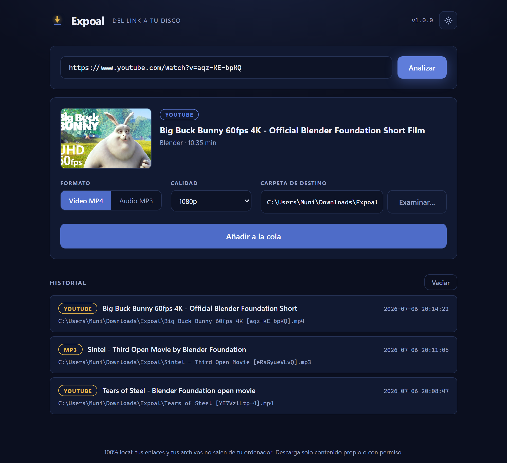

Pega un enlace de YouTube, TikTok o Instagram y Expoal guarda el vídeo en tu propio ordenador. Rápido, privado y gratis.
Windows 10/11 · también funciona en el navegador con Python

Una herramienta directa, sin anuncios ni pasos de más.
El servidor solo escucha en tu ordenador. Tus enlaces y archivos nunca salen de ahí.
Elige el formato y la resolución, hasta la máxima calidad disponible del vídeo.
Elige la carpeta de destino con el explorador de Windows, no escribiendo la ruta.
Encola varias descargas con progreso en vivo y guarda un registro de todo.
Cambia de tema con un clic. Recuerda tu elección y sigue al sistema por defecto.
Un .exe que puedes anclar a la barra de tareas, además del modo navegador.
Tres pasos y el vídeo es tuyo.
Copia la URL de YouTube, TikTok o Instagram y pégala en Expoal.
MP4 o MP3, la calidad y dónde guardarlo con el explorador nativo.
El vídeo cae en tu disco. Sin webs raras, sin anuncios, sin esperas.
Gratis y open source. Descárgalo o mira cómo está hecho.